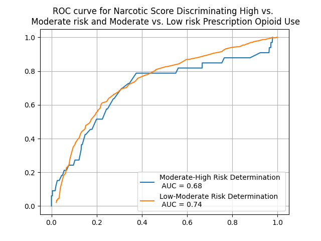

Opioid Risk Metric Threshold Identification - Study Recreation¶
- J M. Maxwell¶
In this notebook we will be recreating the work by Cochran et al. from the paper Validation and Threshold Identification of a Prescription Drug Monitoring Program Clinical Opioid Risk Metric with the WHO Alcohol, Smoking, and Substance Involvement Screening Test. We will be utilizing data from the study Validation of a Community Pharmacy-Based Prescription Drug Monitoring Program Risk Screening Tool to recreate a number of the images and graphs as seen in the paper.
This work was strictly done to demonstrate the advantages of the HEAL Platform's Workspace feature and the ability to utilize data that is joined under the HEAL data mesh. While all the work here was completed by J M. Maxwell and members of the HEAL Platform team, this is not original work, and it is exclusively based off of the work completed by Cochran et al. Due to compounding factors relating to variations in data cleaning methodologies, the work presented here will slightly vary from the results published in Validation and Threshold Identification... by Cochran et al.
The work here does not represent the official opinions, recommendations, or conclusions of Cochran et al. and this work does not represent policy or medical recommendations on behalf of the NIH HEAL Initiative, The Center For Translational Data Science, or The University of Chicago.
Access Data¶
To access the data from this study make sure you are logged in to the InCommon login option and then: 1) Go to the HEAL discovery page to select the study 2) Select the 'Open In Workspace' option and choose the (Tutorials) Example Analysis Jupyter Lab Notebooks workspace option 3) Use the exported study manifest to download the study.
Otherwise you may run the follwowing gen3-sdk command to download the relevant CSV file from the study.
!gen3 drs-pull object dg.H34L/f3de0abd-5338-4b42-8689-04dfc46a6dbb
{"succeeded": ["dg.H34L/f3de0abd-5338-4b42-8689-04dfc46a6dbb"], "failed": []}
Introduction¶
The Prescription Drug Monitoring Program (PDMP) is a highly available tool pharmacists may use to identify patients who are potentially misusing or abusing opioids. However, in practice, mixed results have been achieved in the application of PDMP to improve opioid safety. The output of PDMP information that pharmacists have access to is often un-summarized and of limited clinical value. Appriss Health has developed the Narcotic Score (NS) metric, a novel opioid risk identification metric, with the hope of offering to community pharmacists a clinical metric for identifying subjects with a high risk of opioid misuse and guidelines for promoting response and resources to those high risk individuals.
Methods¶
In their paper, Cochran et al. describe how the NS metric, composed of a collection of survey responses, is a continuous scale from 000-999; the first two numbers are a composite risk score derived from a collection of well known risk indicators and the third number is the total number of active opioid prescriptions (coded 0-9+). They compared and scaled the NS metric to the WHO Alcohol, Smoking, and Substance Involvement Screening Test (ASSIST), which is considered a gold-standard for assessing drug use risk. They then calculated the risk threshold identifications using the ASSIST prescription opioid subscale and all participants were sorted into one of three risk categories - low, moderate, and high.
Data Preprocessing¶
!pip install matplotlib -q
!pip install scikit_learn -q
import pandas as pd
import numpy as np
import os
import matplotlib.pyplot as plt
import matplotlib.image as mpimg
from sklearn import metrics
from zipfile import ZipFile
from IPython.display import Markdown, Image, display
os.makedirs('img/Opioid_Risk_Metric_Threshold_Identification')
Read Data¶
Read in the data and filter by the relevant data fields: Unique Identifier, Narcotic Score, and ASSIST prescription opioid subscale responses.
with ZipFile('CTN0093_csv.zip', 'r') as zip_object:
zip_object.extractall()
df = pd.read_csv('CTN0093_FINAL_DATASET.csv')
cols = [x for x in df.columns if 'RX_OPIOID' in x]
df = df[['ID', 'NARCOTICSCORE'] + cols].copy()
Markdown(df.head().to_markdown())
| ID | NARCOTICSCORE | ASSIST_EVER_RX_OPIOID | ASSIST_3MONTH_RX_OPIOID | ASSIST_DESIRE_RX_OPIOID | ASSIST_ISSUES_RX_OPIOID | ASSIST_FAILED_RX_OPIOID | ASSIST_WORRY_RX_OPIOID | ASSIST_NO_CURB_RX_OPIOID | |
|---|---|---|---|---|---|---|---|---|---|
| 0 | 175702 | 341 | 3 | 6 | 0 | 0 | 0 | 0 | 0 |
| 1 | 958356 | 120 | 3 | 4 | 0 | 0 | 0 | 0 | 0 |
| 2 | 280698 | 451 | 3 | 6 | 6 | 0 | 0 | 0 | 0 |
| 3 | 324612 | 381 | 3 | 2 | 0 | 0 | 0 | 0 | 0 |
| 4 | 453755 | 321 | 0 | nan | nan | nan | nan | nan | nan |
Clean Data¶
Map fields from string to integer values, remove observations with missing ASSIST responses, and replace missing values.
df = df[df.NARCOTICSCORE != 'Not in Appriss Database'].copy()
df.NARCOTICSCORE = df.NARCOTICSCORE.astype(int)
df = df[df.ASSIST_EVER_RX_OPIOID != 999].copy()
df.replace(np.nan, 0, inplace=True)
Calculate ASSIST Risk Levels¶
From their paper, Cochran et al., use the ASSIST prescription opioid risk subscale questionnaire to map subjects to their respective prescription opioid risk levels and remove subjects with incomplete questionnaire responses.
assist_score = (df.ASSIST_3MONTH_RX_OPIOID + df.ASSIST_DESIRE_RX_OPIOID + df.ASSIST_ISSUES_RX_OPIOID +
df.ASSIST_FAILED_RX_OPIOID + df.ASSIST_WORRY_RX_OPIOID + df.ASSIST_NO_CURB_RX_OPIOID)
df['ASSIST_SCORE'] = assist_score
df = df[df.ASSIST_SCORE < 999]
df['ASSIST_LOW'] = (df.ASSIST_SCORE <=3)
df['ASSIST_MEDIUM'] = ((4 <= df.ASSIST_SCORE) & (df.ASSIST_SCORE <=26))
df['ASSIST_HIGH'] = (27 <= df.ASSIST_SCORE)
print(f"""Number of subjects with ASSIST low risk: {sum(df['ASSIST_LOW'])} \n
Number of subjects with ASSIST moderate risk: {sum(df['ASSIST_MEDIUM'])} \n
Number of subjects with ASSIST high risk: {sum(df['ASSIST_HIGH'])} \n """)
Number of subjects with ASSIST low risk: 772
Number of subjects with ASSIST moderate risk: 623
Number of subjects with ASSIST high risk: 33
Calculate Narcotic Score Risk Levels¶
Cochran et al. applied grid search cross validation to select the risk thresholds by finding the NS metrics that gave the lowest average misclassification rate when segmenting low vs. medium and high risk and high vs. low and medium risk. The threshold for high risk individuals was a score of 602 and for low risk individuals was 291.
df['NS_LOW'] = (df.NARCOTICSCORE <=291)
df['NS_MEDIUM'] = ((291 < df.NARCOTICSCORE) & (df.NARCOTICSCORE <602))
df['NS_HIGH'] = (602 < df.NARCOTICSCORE)
print(f"""Number of subjects with NS low risk: {sum(df['NS_LOW'])} \n
Number of subjects with NS moderate risk: {sum(df['NS_MEDIUM'])} \n
Number of subjects with NS high risk: {sum(df['NS_HIGH'])} \n """)
Number of subjects with NS low risk: 733
Number of subjects with NS moderate risk: 689
Number of subjects with NS high risk: 6
Discriminating Validity of the NS metric¶
They applied receiver operating characteristic (ROC) analysis to the ability to seperate high and moderate risk subjects and moderate and low risk subjects on the ASSIST subscale for prescription opioids using the NS metric. This application demonstrated to be reasonably successful.
ns_metrics = df.NARCOTICSCORE.sort_values().unique()
y_high = df.ASSIST_HIGH
y_low = df.ASSIST_LOW
sensitivity_high = np.ones(len(ns_metrics))
specificity_high = np.ones(len(ns_metrics))
sensitivity_low = np.ones(len(ns_metrics))
specificity_low = np.ones(len(ns_metrics))
for i in range(0, len(ns_metrics)):
y_pred_high = 1*(df.NARCOTICSCORE > ns_metrics[i])
y_pred_low = 1*(df.NARCOTICSCORE <= ns_metrics[i])
sensitivity_low[i] = sum(y_low*y_pred_low)/(sum(y_low*y_pred_low)+sum(-1*(y_low)*(y_pred_low-1)))
specificity_low[i] = sum((y_low-1)*(y_pred_low-1))/(sum((y_low-1)*(y_pred_low-1))+sum(-1*(y_low-1)*(y_pred_low)))
sensitivity_high[i] = sum(y_high*y_pred_high)/(sum(y_high*y_pred_high)+sum(-1*(y_high)*(y_pred_high-1)))
specificity_high[i] = sum((y_high-1)*(y_pred_high-1))/(sum((y_high-1)*(y_pred_high-1))+sum(-1*(y_high-1)*(y_pred_high)))
fig = plt.figure()
plt.plot(1-specificity_high, sensitivity_high)
plt.plot(1-specificity_low, sensitivity_low)
high_auc = metrics.auc(1-specificity_high, sensitivity_high)
low_auc = metrics.auc(1-specificity_low, sensitivity_low)
plt.grid()
plt.legend([f'Moderate-High Risk Determination \n AUC = {round(high_auc, 2)}',
f'Low-Moderate Risk Determination \n AUC = {round(low_auc, 2)}'])
plt.title('ROC curve for Narcotic Score Discriminating High vs. \n Moderate risk and Moderate vs. Low risk Prescription Opioid Use')
fig.savefig('img/Opioid_Risk_Metric_Threshold_Identification/figure1.png')
plt.close()
Image(filename='img/Opioid_Risk_Metric_Threshold_Identification/figure1.png')

Risk Threshold Scores¶
They next measured the agreement betwen the NS metric risk thresholds and the ASSIST score established risk thresholds using a confusion matrix below. Approximately 67.2% of the subjects were accurately mapped to the appropriate risk threshold using the NS metric, 17.0% of the participant classifications are false positives and the remaining 15.8% are false negatives.
x = pd.DataFrame(np.array(((sum((df.ASSIST_LOW == 1) & (df.NS_LOW == 1)), sum((df.ASSIST_MEDIUM == 1) & (df.NS_LOW == 1)), sum((df.ASSIST_HIGH == 1) & (df.NS_LOW == 1))),
(sum((df.ASSIST_LOW == 1) & (df.NS_MEDIUM == 1)), sum((df.ASSIST_MEDIUM == 1) & (df.NS_MEDIUM == 1)), sum((df.ASSIST_HIGH == 1) & (df.NS_MEDIUM == 1))),
(sum((df.ASSIST_LOW == 1) & (df.NS_HIGH == 1)), sum((df.ASSIST_MEDIUM == 1) & (df.NS_HIGH == 1)), sum((df.ASSIST_HIGH == 1) & (df.NS_HIGH == 1))), )))
x.rename(columns={0:'ASSIT Low Risk', 1:'ASSIT Moderate Risk', 2:'ASSIT High Risk'}, index={0:'NS Low Risk', 1:'NS Moderate Risk', 2:'NS High Risk'}, inplace=True)
table = x.astype(str) + ' - ' + (100*x/x.sum().sum()).round(1).astype(str) + '%'
Markdown(table.to_markdown())
| ASSIT Low Risk | ASSIT Moderate Risk | ASSIT High Risk | |
|---|---|---|---|
| NS Low Risk | 532 - 37.3% | 194 - 13.6% | 7 - 0.5% |
| NS Moderate Risk | 239 - 16.7% | 426 - 29.8% | 24 - 1.7% |
| NS High Risk | 1 - 0.1% | 3 - 0.2% | 2 - 0.1% |
Discussion And Conclusions¶
Cochran et al. argue that the accuracy of the NS metric in segmenting subjects by their opioid risk demonstrates that the NS metric is a fair screening tool for detecting risky prescription opioid use. Additionally, combining the number of correctly identified risk profiles with the number of subjects who have high opioid use but low reported risk (those subjects likely needing additional screening), the NS metric provides a meaningful level (86%) of clinically useful and actionable information. Cochran et al. argue that this high rate of accurate, clinically actionable insights would suggest that the NS metric may have an impactful role as a "universal screen" because of its high availability to community pharmacists and physicians and its relatively low barriers of use.
They beleive that inn application, after pharmacists or clinicians receive a subject's NS metric, the pharmacists or clinicians may use the scores to triage subjects based on their respective risk profiles. If subjects are of moderate or high risk, as determined by their Narcotic Score, pharmacists may then use a decision support tool like the Prescription Drug Monitoring Clinical Decision Support Tool to assess which further risk assessment tools and patient recommendations to make.
According to the paper, false positive misclassification is greatest among subjects with significant outlying factors to their pain management or prescription opioid use, such as disability or generally poor health. If the NS metric is applied in clinical practice, these false positive classifications would require further patient screening to rule out risks of opioid misuse and to allow pharmacists and clinicians to recommend additional pain management solutions.
The study from Cochran et al. explains how the NS metric can be used as a universal screening tool for prescription opioid misuse risk by clinicians and pharmacists at the community level. In particular, the NS metric offers an easy-to-use format for identifying risky subject profiles with minimal effort required from either the subject or the pharmacist, and utilization of the NS metric is well positioned to inform decision-making by pharmacists and to compliment existing surveys for assessing subjects' risks of prescription opioid misuse.
References¶
Paper¶
Cochran G, Brown J, Yu Z, Frede S, Bryan MA, Ferguson A, Bayyari N, Taylor B, Snyder ME, Charron E, Adeoye-Olatunde OA, Ghitza UE, Winhusen T. Validation and threshold identification of a prescription drug monitoring program clinical opioid risk metric with the WHO alcohol, smoking, and substance involvement screening test. Drug Alcohol Depend. 2021 Nov 1;228:109067. doi: 10.1016/j.drugalcdep.2021.109067. Epub 2021 Sep 24. PMID: 34610516; PMCID: PMC8612015.
Study¶
Cochran G, Winhusen T. Validation of a Community Pharmacy-Based Prescription Drug Monitoring Program Risk Screening Tool. NIDA-CTN-0093. https://datashare.nida.nih.gov/study/nida-ctn-0093